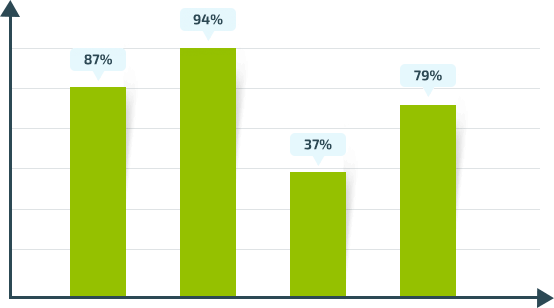

ArthroMed
CREMA PER LE ARTICOLAZIONI
- Elimina l’infiammazione, il gonfiore e l’arrossamento
- Ridona mobilità alle articolazioni i 5-7 giorni

Fino alla fine dell’offerta:
ArthroMed RISOLVE LA MAGGIOR PARTE DEI PROBLEMI CON LE ARTICOLAZIONI
IN CASO DI INFIAMMAZIONE O MALESSERE ALLE ARTICOLAZIONI
per eliminare il dolore e ripristinare il funzionamento delle articolazioni
CON I CAMBIAMENTI DOVUTI ALL’ETA’
per curare le articolazioni danneggiate dai cambiamenti dovuti all’età
IN CASO DI TRAUMI ALLE ARTICOLAZIONI
per la riabilitazioni in caso di danni meccanici o traumi e stiramenti
IN CASO DI SFORZI ECCESSIVI PER LE ARTICOLAZIONI
per gli sportivi di qualsiasi tipo, in caso di sforzi
Il malessere non passa da solo!
A differenza di molti altri malesseri (come ad esempio le influenze) i dolori alle articolazioni non
possono passare da soli, questo vuol dire
che con il tempo il dolore non farà che peggiorare creando sempre più disagio.
Se si continua a rimandare la cura il problema può evolversi ad un livello tale da rendere inutile
anche la terapia conservativa
Allora bisogna ricorrere ad un’operazione costosa. In alcuni casi può essere necessario
arrivare all’amputazione dell’articolazione, il che comporta l’invalidità.
ArthroMed agisce
Efficacia ArthroMed confermata da test clinici
L’efficacia d’azione di ArthroMed sulle malattia delle articolazioni
Ripristinata l’elasticità delle vertebre
Sono stati notati chiari miglioramenti alle articolazioni già i primi due giorni
Sono tornati alla vita attiva entro 15 giorni
Hanno annunciato: gli altri
prodotti danno un risultato
che non è neanche simile effetto
ArthroMed
contiene al 100% componenti naturali
Estratto di foglie di cannella
- Libera dal dolore in caso di movimento e cura la cartilagine
- Attiva il processo della rigenerazione rapida dei tessuti delle articolazioni
Canfora
- Ha un effetto antinfiammatorio
- Agisce sul metabolismo ed elimina i gonfiori
Estratto di semi di girasole
- Idrata la cartilagine e ne previene i danni
- Stabilizza e rinforza la struttura interna delle articolazioni
Menta piperina
- Rilassa le zone irritate e dona sollievo dal dolore
- Ripristina la cartilagine delle articolazioni
«Liberarsi rapidamente dai dolori alle articolazioni e tornare rapidamente in salute è possibile»
La cosa più paurosa è che questi problemi possono portare alla paralisi o all’invalidità. Al giorno d’oggi esiste un solo prodotto in grado di risolvere questi problemi completamente Si tratta di ArthroMed per le articolazioni.
Io consiglio ai miei pazienti il prodotto unico ArthroMed, che ha un effetto del 100% in caso di malattie alle articolazioni. E’ provato da test clinici, l’assunzione di ArthroMed cura le articolazioni con un ciclo di cura.
flebologo, professoressa universitaria
metodo d’assunzione
-
Passo 1
Prendete 5 grammi di preparato ArthroMed e massaggiate lentamente la zona interessata per 5 minuti.
-
Passo 2
SI raccomanda di applicare ArthroMed non meno di 4 volte al giorno. Non applicare più di 10 grammi su ogni singolo punti.